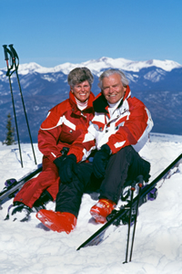
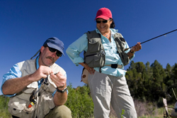

Ted and Betty Russon have been happily married for 30 years. They look back on their honeymoon at Arches National Monument with great fondness.
They have tried to keep the same spice in their marriage as they found on their honeymoon.
This amazing couple makes it a practice to try out new extreme sports together, just for the fun of it.
Their own honeymoon consisted of a wild mountain biking adventure in the beautiful slick red rock near Moab, Utah and through Arches National Monument.
On this same trip they also spent 3 days white water rafting down the Colorado River.

Extreme Honeymoons has been in business since 1976. Over 2000 couples have enjoyed these high-octane honeymoons.
The Russons have also had several of their children get married and have enjoyed planning ultra extreme honeymoons for these lucky couples.
One of the benefits of living in Utah is the wide variety of adventure activities in the state.



Recently married couples who want to get to know each other better should think about trying an extreme honeymoon.
All the newlyweds have to do is sign the injury release forms. You could choose to have a guided adventure or go it on your own.
If you have a daring proposal for an untried adventure, just tell the Russons and they will make your dreams come true.
"If you believe the saying, you only get married once, then you will want to make your honeymoon a memorable experience.
Extreme Honeymoons can help the couple that screams together, stay together. They will expertly plan every step of your
unforgettable trip so that all you will have to do is just survive. According to Ted Russon, the founder of Extreme Honeymoons,
"What else would you want to do on your honeymoon?"
"Brides-to-be might worry that their honeymoon may be a forgettable experience. If you think a candlelit dinner sounds boring and you have
seen one too many movies, then consider an Extreme Honeymoon. Let Ted Russon's Extreme Honeymoons plan all the details of a wild and
crazy honeymoon adventure. These reasonably priced tours are totally safe and an insurance policy is included with the cost of all
packages. One recent newlywed breathlessly related this experience, "Like, it was the most awesome experience of my life!" So surprise
your new spouse with a white-knuckle honeymoon."